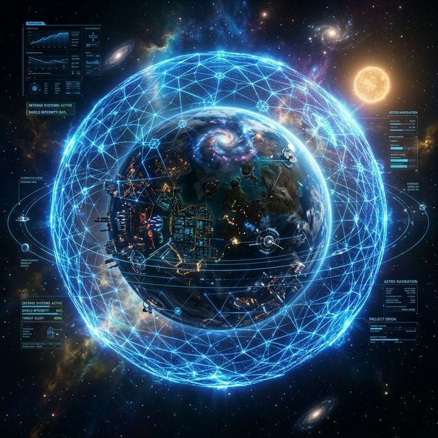
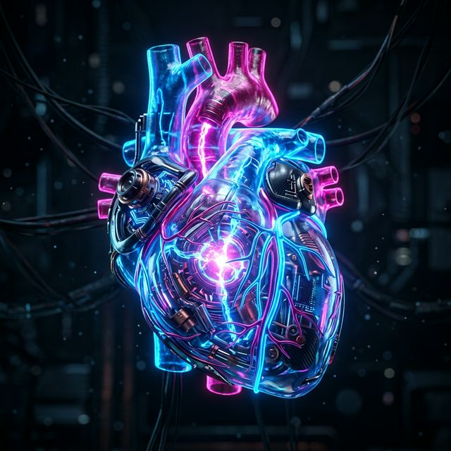

Оркеструйте
майбутнє,
а не код
Universal AI Orchestrator — це «диригент» для ваших нейромереж. Ми автоматично передаємо контекст, пам'ять та завдання між GPT-4, Claude та вашими базами даних.

Хвороба vs Імунітет
Чому звичайні ШІ-рішення програють системному підходу
Втрата Контексту
Чат-боти «забувають» деталі на другому кроці. Це веде до фінансових втрат та помилок, які бізнес не може дозволити.
Vendor Lock-in
Залежність від одного провайдера (тільки OpenAI) робить ваш бізнес вразливим.
Orchestrator Solution
Ми автоматично зберігаємо State (пам'ять) і передаємо її найдешевшій або найрозумнішій моделі в залежності від задачі.
Governance Guard
Digital Safe
Ми не просто «з'єднуємо» — ми аудіюємо. Кожен крок перевіряється на логічні конфлікти та безпеку ще до виконання.
Від теорії до експлуатації
Виберіть свій бізнес-кейс і подивіться, як автоматизація виглядає на практиці.
Content Dept
Агент-аналітик знаходить тренд → Копірайтер пише пост → Коректор видає фінал. Повна автоматизація SMM без копіпасту.
Smart Analyst
Завантажте 100 PDF-звітів. Система витягне дані, порівняє їх і побудує фінальні висновки в одному діалозі.
Support 24/7
Розуміння емоцій, доступ до CRM та автоматичне формування відповіді за 5 секунд. Ідеальна підтримка клієнтів.

Цифрове Серце
Ми будуємо ШІ з українською душею. 20% прибутку ми спрямовуємо на підтримку проєкту «аШрам» — простору реінтеграції для наших ветеранів та ветеранок.
Готові до досконалості?
Зробіть вашу ШІ-інфраструктуру професійною, безпечною та прибутковою вже сьогодні.